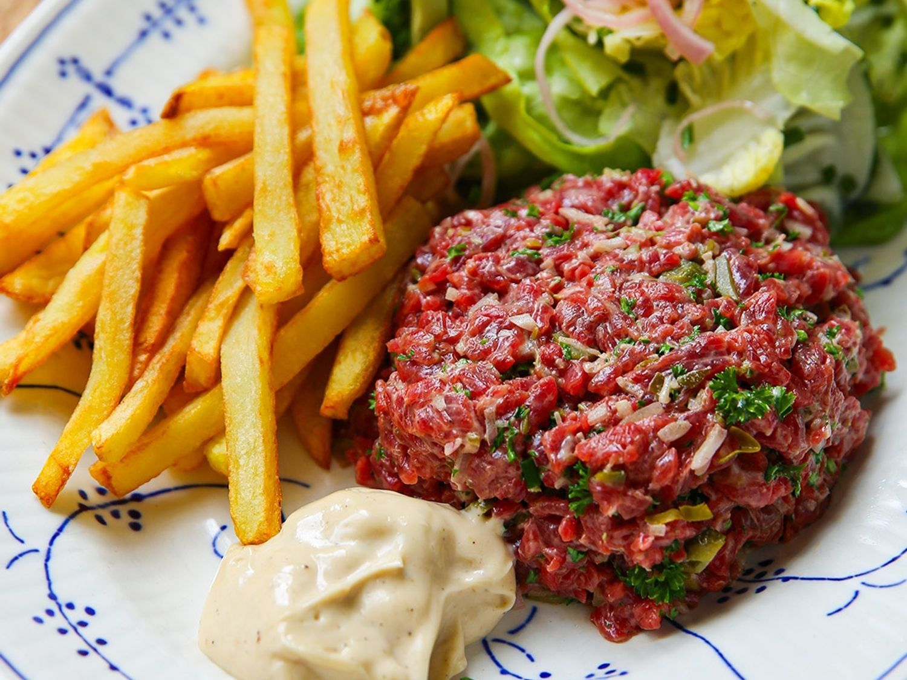

Steak Tartare

Ingredienten
- Frietaardappelen 1.000 g
- Rundsvlees bavette of pelé royale 600 g
- Sjalotten 2
- Dragonazijn
- Krulpeterselie 0,5 bosjes
- Kappertjes 1 el
- Augurk 1 el
- Mayonaise vers 1 el
- Ketchup 1 el
- Tabasco
- Engelse saus
- Kropsla 0,5
- Bieslook
- Olijfolie
- Zwarte peper
- Zout
Berdeing
-
Laat het frituurvet opwarmen tot 140 °C. Spoel de aardappelen en snijd
ze in dikke frieten.
-
Bak de dikke frieten een eerste keer in de friteuse, laat ze uitlekken
op keukenpapier en laat ze volledig afkoelen. Verhoog daarna de
temperatuur van de friteuse naar 180 °C.
-
Snijd het vlees eerst in plakjes en daarna heel fijn. Doe alles in een
kom. Pel de sjalot, snijd fijn en voeg bij het vlees.
-
Pel de overige sjalot en snijd in halve maantjes. Sprenkel er een scheut
dragonazijn over en laat ze even marineren.
-
Snipper de peterselie fijn, snijd de augurken en de kappertjes fijn en
meng alles onder het vlees.
-
Voeg de mayonaise, de ketchup toe, de tabasco, de Engelse saus, peper en
zout toe. Meng alles goed onder elkaar en bedek de tartaar met
vershoudfolie. Bewaar koud.
- Kuis en was de sla en laat hem uitlekken.
-
Snijd de bieslook in korte staafjes en meng ze samen met de gemarineerde
sjalot onder de sla. Kruid de sla met peper, zout en een likje
olijfolie.
-
Bak de afgekoelde, dikke frieten een tweede keer goudbruin en krokant in
de friteuse op 180 °C.
-
Schep de tartaar in een serveerring en maak er een mooi torentje van.
Serveer er de dikke frieten en de sla bij.